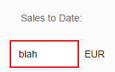

Step 11: Validation Using the Message Manager
So far, we have created a currency field that can format itself correctly. The currency data type also has the ability to validate that user input adheres to to the requirements of a currency; however, data type validation functions are managed by OpenUI5, which of itself has no mechanism for reporting error messages back to the UI; therefore, we need a mechanism for reporting error messages raised by validation functions back to the user. In this step, we will connect the entire view to a feature known as the "Message Manager". Once this connection is established, any validation error messages generated based on the user input will be passed to the message manager which in turn will connect them to the appropriate view and control that caused the error.

You can view and download all files in the Demo Kit at Data Binding - Step 11.
...
<script>
...
// Assign the model object to the SAPUI5 core
sap.ui.getCore().setModel(oModel);
var oResourceBundle = new sap.ui.model.resource.ResourceModel({
bundleName: "sap.ui.demo.db.i18n.i18n"
});
sap.ui.getCore().setModel(oResourceBundle, "i18n");
// Create view
var oView = new sap.ui.core.mvc.XMLView({ viewName : "sap.ui.demo.db.view.App" });
// Register the view with the message manager
sap.ui.getCore().getMessageManager().registerObject(oView, true);
// Insert the view into the DOM
oView.placeAt("content");
});
</script>
</head>
<body class="sapUiBody" id="content">
</body>
</html>-
The XML view is now created as a named object called oView.
-
The view object oView is registered with the MessageManager.
-
Once registered, the XML view is then inserted into the DOM as before.
You can now enter a non-numeric value into the Sales To Date field and either press Enter or move the focus to a different UI control. This action triggers either the onenter or onchange event and then OpenUI5 executes the validation function belonging to the sap.ui.model.type.Currency data type.
Now that the view has been registered with the MessageManager, any validation error messages will be picked up by the MessageManager, which in turn checks its list of registered objects and then passes the error message back to the correct view for display.
Note that the field in error has a red border: 
However, the error message itself will only be displayed when that particular field
has focus: